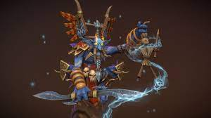
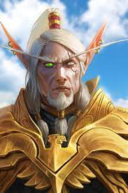

|
Thrall |
Thrall, also known as Go'el, is a wise and honorable orc who played a crucial role in uniting the orcish clans and forming the Horde. As a former Warchief, he is a symbol of strength and leadership. Thrall is skilled in both diplomacy and combat, making him a respected figure among the Horde. |
Orc |
 |
Baine Bloodhoof |
Baine Bloodhoof is the High Chieftain of the tauren, known for his calm demeanor and strong sense of justice. He succeeded his father Cairne Bloodhoof and has been a steadfast leader, striving for unity among the Horde races. Baine is a compassionate and honorable figure, embodying the values of the tauren people. |
Tauren |
|  |
Rokhan |
Rokhan is a shadow hunter, a revered troll mystic and warrior. Known for his prowess in both stealth and combat, Rokhan has been a loyal supporter of the Horde. He played key roles in various campaigns and battles, showcasing his cunning strategies and fierce determination. |
Troll |
|  |
Lor'Themar Theron |
Lor'Themar Theron is the regent lord of Quel'Thalas and a skilled Blood Elf ranger. Lor'Themar is a pragmatic leader, often making tough decisions to ensure the survival and prosperity of the Blood Elf people. He has faced numerous challenges, including the aftermath of the Scourge invasion, and has proven to be a resilient and resourceful leader. |
Blood Elf |